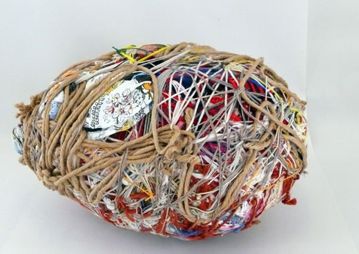

"Let's face it. We're undone by each other."
doesn't this mean we are also made of and by each other?
where is it worth being reminded that this is true? how do you represent this?
with strings
this is judith scott

she worked with textiles
did a string thing
at the armory
also, that weezer song
"if you want to destroy my sweater, hold this thread as I walk away"
i did some small string studies
1
2
3
and dreamt of this thing
on the u.s.-mexico border
350 million humans crossed every day in 2010
12 million people live in border counties on either side
$1 billion worth of transactions happen daily
we can do this exercise for many borders and walls around the world
"It is not as if an 'I' exists independently over here and then simply loses a 'you' over there, especially if the attachment to 'you' is part of what composes who 'I' am."
what does this have to do with data?
it has to do with catherine d'ignazio's
question"Can we ask of our data that it point to its own outsides?"
threads as a medium for talking about the relationship between objects, instead of the lone, autonomousobject itself
moving away from data art necessarily being a 1:1 representation
how can data art account for affect?
"When we lose some of these ties by which we are constituted, we do not know who we are or what to do. On one level, I think I have lost 'you' only to discover that 'I' have gone missing as well."
thanks for your words, judith butler
this has been a "conceptual project focused on possiblily without constraint" for jer thorp's
data art class